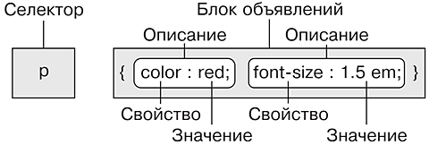
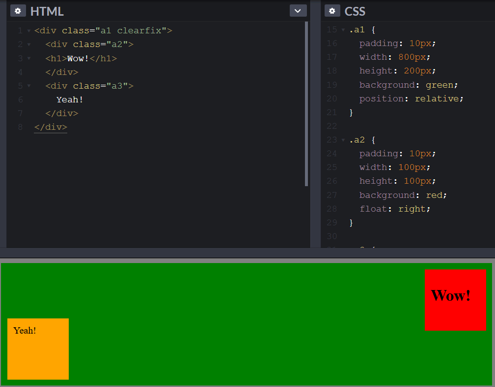

Оформление Web-страниц
В современной версии стандарта HTML5 практически все оформление страницы делается при помощи каскадных листов стилей,
CSS.
Команда CSS состоит из селектора и соответствующих ему свойств:

- Все относящиеся к селектору свойства записываются в фигурных скобках
- Описания свойств разделяются точкой с запятой. Не поставил «;» между свойствами – получил ошибку
- Свойства и их значения разделяются двоеточием
- Вокруг селекторов, свойств, их значений можно ставить любое количество пробелов, знаков табуляции и переносов строки
Способы использования CSS в HTML
- внешние стили, подключаются тегом <link> в голове документа, т.е. внутри тега <head>:
<link rel="stylesheet" href="style.css">
- внутренние стили, внутри тега <style> (a <style> – внутри тега <head> документа html)
- встроенные стили, как значение атрибута style:
<p style="display:none">
Наследование
У элементов есть связи внутри объектной модели DOM.
- Тег, внутри которого находятся другие теги, для них предок, а они – потомки.
- Тег, который находится непосредственно в предке, без промежуточных елементов – дочерний элемент, а предок для него – родитель.
Свойства предков могут наследоваться потомками.
Виды селекторов
Селектор – от to select: выбирать, отбирать. Чаще всего используются первые шесть.
- универсальный (*): Выбирает все элементы (теги) на странице;
- элемент: выбирает все элементы (теги) с указанным именем;
- класс (class): выбирает все элементы (теги) с указанным классом (в атрибуте class);
- идентификатор (id): выбирает элемент (тег) с указанным уникальным идентификатором (атрибут id);
- вложенные селекторы, запись через пробел;
- дочерний селектор, должен располагаться непосредственно внутри родительского элемента. Записывается через >.
Также используются дочерние псевдоклассы :first-child, :last-child,
:only-child, :nth-child (odd), :nth-child (even) и др.
- Соседние селекторы: i + b. Стиль применяется к тегу b, соседнему по оотношению к i.
- Родственные селекторы: i ~ b. Стили применяются ко всем близлежащим элементам.
- Селекторы атрибутов: стили приименяются, если задан атрибут тега. Например: q[title]
- [атрибут="значение"] устанавливает стиль для элемента в том случае, если задано определённое значение указанного атрибута. Пример: a[target="_blank"]
- [атрибут~="значение"] Стиль применяется в том случае, если у атрибута имеется указанное значение или оно входит в список значений, разделяемых пробелом. Пример: [class~="block"]
- [атрибут|="значение"] Стиль применяется к элементам, у которых атрибут начинается с указанного значения или с фрагмента значения, после которого идет дефис.
Пример: div[class|="block"] применится к <div class="block-menu-item">
- [атрибут^="значение"] стиль применяются ко всем элементам, у которых значение атрибута начинается с указанного текста. Пример: a[href^="http://"]
- [атрибут$="значение"] стиль применяются ко всем элементам, у которых значение атрибута оканчивается указанным текстом. Пример: a[href$=".ru"]
- [атрибут*="значение"] определяет, что значение атрибута содержит указанный текст. Пример: [href*="000webhost"]
Свойства селектора будут применены ко всем выбранным элементам (тегам) на странице.
Ниже для удобства свойства разбиты на несколько категорий.
Стили по умолчанию
У Web-страницы без стилевого файла есть оформление: элементы имеют отступы, используются шрифты с определенными параметрами и так далее. Например, ссылки – синие и подчеркнуты. Это браузерные стили по умолчанию, они определены в стандарте CSS консорциумом W3C.
Алфавитный список элементов HTML и их стилей по умолчанию.
Все свойства CSS
Список 300+ CSS-свойств,
Таблица css-свойств.
Фон – background
- background-color: white; Задает цвет фона.
- background: white url("image.jpg") no-repeat 50% 0; Общее свойство, описывающее фон страницы.
Размеры, ширина, высота – width, height
- ширина, width: 100px;
- минимальная ширина, min-width: 100px;
- максимальная ширина, max-width: 100px;
- высота, height: 100px;
- минимальная высота, min-height: 100px;
- касимальная высота, max-height: 100px;
В чем задаются значения? В абсолютных
и относительных единицах.
Единицы измерения
Цвет – color
Шрифт – font
Отдельная страница про шрифты и их свойства.
Шрифт в CSS с картинками.
- font-family: arial sans-serif;
Гротеск: sans – без + serif – засечек. Антиква, serif – с засечками:

- font-size: 16pt;
CSS Web Safe Font Combinations,
Мобильная типографика
Текст – text
Отдельная страница про свойства текста.
- text-align: justify; (left, right, center)
- text-decoration: underline;
- line-height: 20pt;
Блочная модель
Любой блочный элемент состоит из четырех составляющих:
- Основой блока выступает его контент: текст, изображения и т.д. Контент имеет 2 размера: ширина (задается свойством width) и высота (height);
- вокруг контента идет внутреннее поле (padding), создающее пустое пространство от контента до внутреннего края границ;
- затем идут границы (border).
- Завершают блок внешние отступы (margin, от «маргиналии»), пустое пространство от внешнего края границ.

Похоже на матрешки: поменять местами контент, padding, border и margin невозможно!

Каждая составляющая, кроме контента, может иметь различные размеры с каждой
из четырех сторон.
Часто задаются по часовой стрелке: top, right, bottom, left.
Таким образом, блочный макет страницы с контентом описывается максимум 14
размерами. Если толщина рамки со всех сторон одинаковая, параметров 11.

Схлопывание отступов
У блочных элементов, расположенных рядом друг с другом по вертикали, отступы не суммируются, а объединяются между собой. Само схлопывание действует на два и более блока (один может быть вложен внутрь другого) с отступами сверху или снизу, при этом примыкающие отступы комбинируются в один.
Этот эффект работает только для блоков, у которых не заданы поля и границы. Для отступов слева и справа схлопывание никогда не применяется.
Зачем? Для корректного отображения текста: расстояние между абзацами (тег <p>) без схлопывания увеличится в два раза, тогда как верхний отступ первого абзаца и нижний отступ последнего абзаца останутся неизменными. Схлопывание гарантирует, что расстояние в абзацах везде будет одинаковым.
Схлопывание внешних отступов: полное описание и примеры
box-sizing
Свойство box-sizing применяется для изменения алгоритма расчета ширины и высоты элемента; чтобы свойства width и height задавали размеры не контента, а размеры блока.
- box-sizing: content-box; свойства width и height задают ширину и высоту контента и не включают в себя значения отступов, полей и границ.
- box-sizing: border-box; Свойства width и height включают в себя значения полей и границ, но не отступов (margin).
- box-sizing: padding-box; Свойства width и height включают в себя значения полей, но не отступов (margin) и границ (border).
- box-sizing: inherit; Наследует значение родителя.
Рамка – border
У рамки есть дополнительные свойства: тип линии, скругление и т.д. Примеры:
- обобщенное правило. border: 2px dashed blue;
- радиус скругления рамки. border-radius: 5px;
- Скруглить квадрат до круга – border-radius: 50%; пример.
- border-collapse: collapse (separate, inherit); Устанавливает, как отображать границы вокруг ячеек таблицы. Это свойство играет роль, когда для ячеек установлена рамка, тогда в месте стыка ячеек получится линия двойной толщины. При значении collapse линия между ячейками отображается только одна.
Поля – margin и padding
Поля страницы можно инспектировать в браузере по нажатию F12, вкладка Elements
- margin: 0 auto; (внешнее поле) Так заданное поле центрирует блок
- padding: 20px; (внутреннее поле)
Положение и видимость
- display: block; (inline, inline-block, none). display: none используется
для скрытия элемента со страницы.
- position: relative; (absolute)
- float: right; (left)
- object-fit: cover; (contain, scale-down. Для тегов img и video)
- object-position: 50% 50%;
- overflow-y: scroll;
Горизонтальное и вертикальное выравнивание
- Центрирование блочного элемента: { margin: 0 auto; width: 50%; }
- Центрирование строчного элемента: text-align: center;
- Центрировать горизонтально и вертикально: #mysection { display: flex; align-items: center justify-content: center; }
Центрирование в css
выравнивание в css
Basic concepts of flexbox
Остальное
- list-style: none; (применяется для скрытия буллетов у ненумерованных списков)
Геометрия в CSS
Альтернативы CSS?
Сравнение стилевых языков.
Существует XSL (eXtensible Stylesheet Language) – семейство рекомендаций консорциума W3C, описывающее языки преобразования и визуализации XML-документов. Состоит из трех частей:
- XSL Transformations (XSLT) – язык преобразования XML-документов.
- XSL Formatting Objects (XSL-FO) – язык разметки типографских макетов и иных предпечатных материалов.
- XPath – язык путей и выражений, используемый в том числе и в XSLT для доступа к отдельным частям XML-документа.
Языком, лежащим в основе XSL, является XML, а это означает, что XSL более гибок, универсален. Почти не используется в вебе, потому что более сложен и требует более строгого подхода.
Дизайнеры и верстальщики всего мира сделали все, чтобы технологии, основанные на XML, не стали рабочими стандартами веба. Что, конечно, не избавило от недостатков HTML и CSS. В итоге имеем постоянно и стихийно меняющиеся технологии разных версий, по-разному поддерживаемые разными браузерами.
Хороший дизайнер должен учитывать особенности поддержки технологий разными версиями разных браузеров. С прекращением поддержки старых версий операционной системы Windows и ростом популярности мобильных технологий ситуация улучшилась, но пока еще далека от идеала.
Применение свойств классов к простому html-коду:

Ссылки: